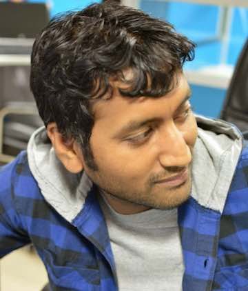

If I have to describe myself professionally in one sentence, I would probably say “I fix things”. This is not something of a trait that I picked along working. I have been fixing things as long as I could remember. My oldest memory related to fixing something is from 4th standard. I came home from school and wanted to “fix” a fused bulb. Somehow attached the filament and inserted it in its socket. That didn’t go so well though. Entire house was without electricity for some significant amount of time till the electrician came and fixed it.
Moving on from childhood’s mostly successful and some not so successful fixing incidents, I ended up working with computers. My day-to-day life is something where I am looking at some black and white computer window and trying to achieve something. I think this accurately describe lives of most people working in software industry. I can’t say for others, but I love it way too much. I tend to forget everything else. At that moment, it’s just me, my computer and some algorithm/issue. As a DevOps, I am currently helping Sprinklr in disrupting future of Social@Scale.
Outside of work, I am a passionate biker. Both bikes and motorbikes. Living in a country as beautiful as India has given me a lot of opportunities to go around and experience new experiences. I love to trek. The sheer pleasure of getting lost in nature (under risk free circumstances of course) is so liberating. I enjoy photography. Not good at it at this point, but I capture tons of pictures nonetheless. Music is something that has always been close to my heart. And most times you will see me indulged in songs. Ice Cream is life and I am bit of sweet tooth. I have been trying to turn vegetarian but Chicken biryani is love, so vegetarianism gets cancelled from time to time. Love the chai from North India and Coffee from South India. Not into alcohol. I enjoy banana milkshake way too much though.
Handling pressure is both my strength and weakness. I believe I am extremely efficient in handling professional pressures but not so good at handling personal ones. And hence this has been an item in list of things to do in life.
I think this much is way too much already. So I will stop. Say Hi if you want to get in touch with me.